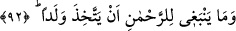
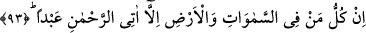
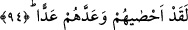

92. Halbuki çocuk edinmek Rahmân’ın şanına yakışmaz.
“Halbuki çocuk edinmek Rahmân’ın şanına yakışmaz.” Yani onlar Allâh’a asla
yakışmayacak bir şey söylediler. Bu mümkün değildir. O’na çocuk istemek de yakışmaz.
Çünkü bu, kendi içinde imkânsızdır. Çocuk babanın bir parçasıdır. Bu durumda Allâh’ın
mürekkeb (parçalardan oluşmuş) olması ve onu oluşturacak birinin bulunması gerekir.
Başkasının oluşturmasına ihtiyaç duyan, ise ilâh olamaz.
93. Göklerde ve yerde olan herkes istisnasız, kul olarak Rahmân’a gelecektir.
“Göklerde ve yerde bulunan herkes istisnâsız,” oralarda bulunan melekler, insanlar
ve cinler “kul olarak Rahman’a gelecektir.” teslimiyet ve kullukla Allâh’a
sığınacaklardır.
el-Uyûn’da der ki: “Melekler, İsâ ve Üzeyr gibi bütün yaratılmışlar kıyamet günü
Allâh’a boyun eğip alçalmış ve kulluklarını îtiraf etmiş bir şekilde Rahman’ın huzuruna
geleceklerdir. Yâni tıpkı kölelerin efendilerine boyun eğdiği gibi Allâh’ın rubûbiyyetine
sığınacaklardır. Elbette böyle bir Allâh’a onları evlâd edinmek yakışmaz.”
Ebu Bekir Verrâk (r.a.) demiştir ki: “Kul, kulluğa devam etmekten ve muhtaç
olduğunu ortaya koymaktan daha güzel bir şeyle Allâh’a yaklaşmamıştır. Çünkü kulluğa
devam etmek, hizmetin devamına; muhtaç olduğunu ortaya koymak da sığınma ve niyâzın
devamına sebep olur.”
Hâfız şöyle der:
Dergâhına fakir ve hasta geldim, merhamet eyle
Ki sana duâdan gayrı elimde armağanım yok
94. O, onların hepsini kuşatmış ve sayılarını tesbit etmiştir.
“O, onların hepsini kuşatmış ve sayılarını tesbit etmiştir.” Yani onları sınırlamış ve
kuşatmıştır. Oldukça çok olmalarına rağmen onlardan hiç kimse O’nun ilminin
kuşatmasından, kudret ve hâkimiyetinin yakalamasından hâriç değildir. Allah onların
şahıslarını, nefeslerini ve ecellerini sayıp tesbit etmiştir.